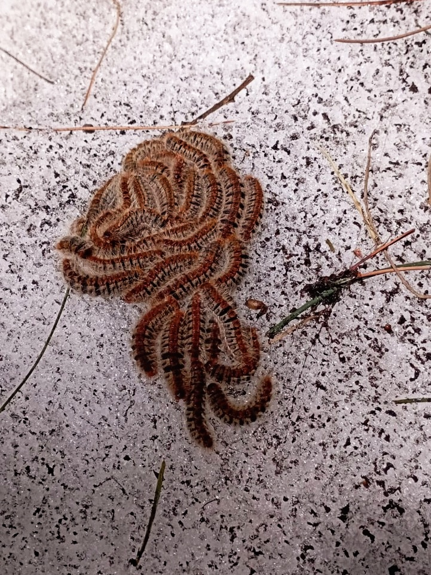
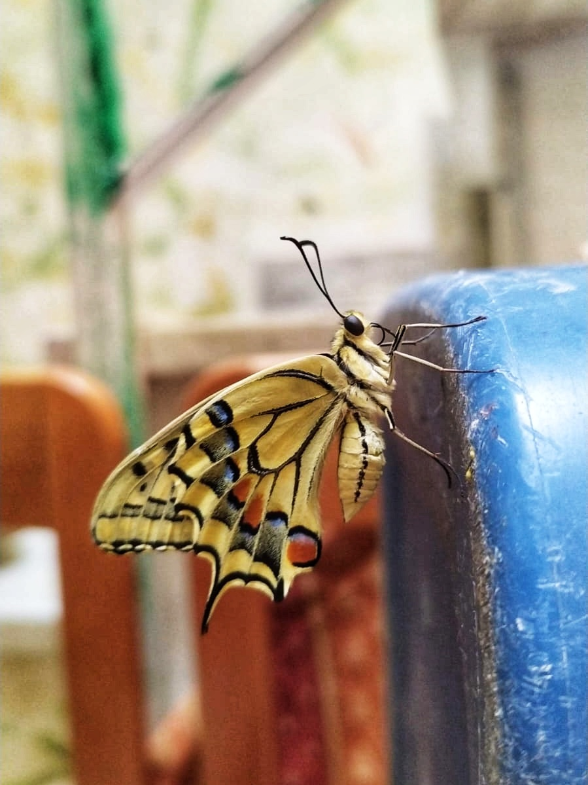
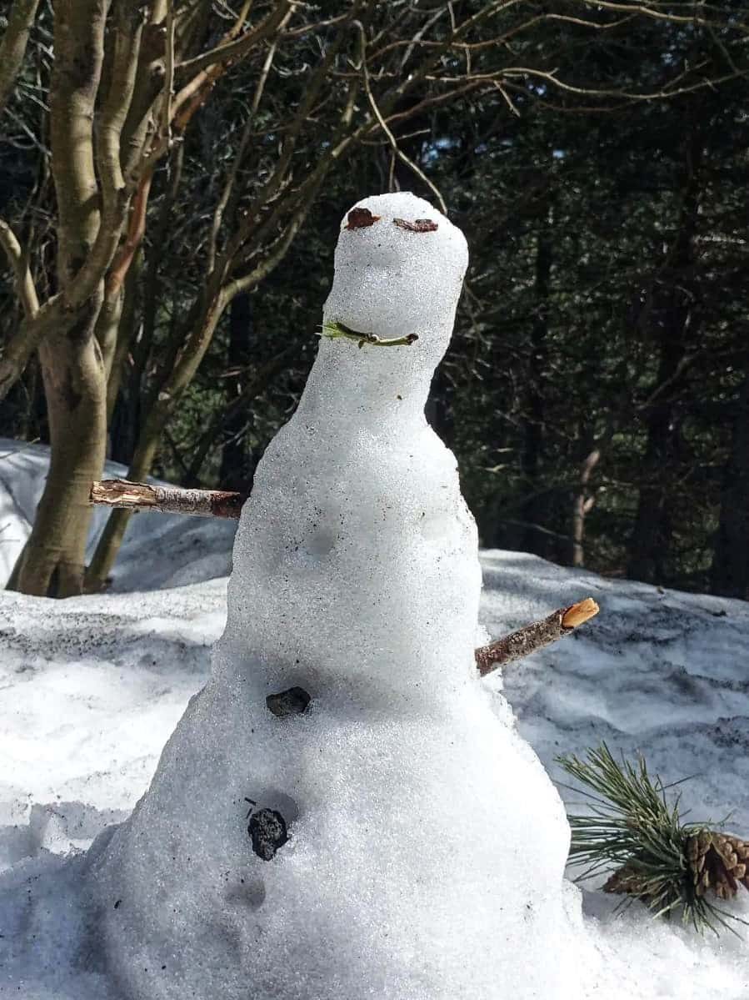

Escursioni e Natura
Le escursioni sono per me non solo un momento di pausa, ma anche un'occasione per osservare da vicino la vita che ci circonda. Ho sempre nutrito una forte curiosità per la biologia, la chimica e l'entomologia: ogni camminata nella natura è anche un'esperienza di scoperta scientifica e visiva, dove ambiente, paesaggio e dettagli microscopici si intrecciano.
Scatti dal percorso



Esperienza immersiva
Riprese personali durante un'escursione attorno al monte Etna, Sicilia – 2023-2025. Foto di redcharlie su Unsplash
Music by Vitalii Vakulenko from Pixabay